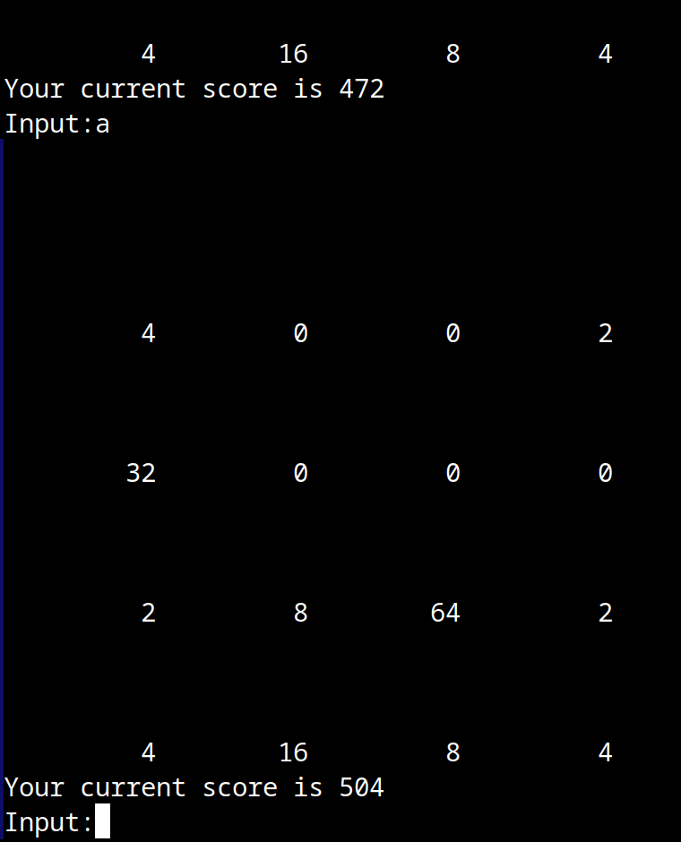
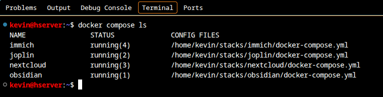

Über mich
Sehr geehrte Damen und Herren,
hiermit bewerbe ich mich bei der HELDELE GmbH um einen Ausbildungsplatz als Fachinformatiker für Anwendungsentwicklung. Auf dieser Seite möchte ich Ihnen zeigen, was ich bisher gelernt und gemacht habe. Meinen Lebenslauf haben Sie separat erhalten.
Mein erstes Praktikum im IT-Bereich habe ich bereits 2015 während der Schulzeit gemacht, als Systeminformatiker bei der Cinteg AG in Göppingen. Danach bin ich erst einmal in eine andere Richtung gegangen, wie Sie in meinem Lebenslauf sehen können. Seit 2023 beschäftige ich mich mit C++, meiner selbst erlernten Programmiersprache, und bin seitdem auch dabei geblieben. Später kamen dann noch HTML, CSS, JavaScript und etwas PHP dazu. Mein erstes richtiges eigenes Programm, das Spiel 2048, ist seit November 2026 fertig.
Im Februar 2025 habe ich ein Praktikum bei der NIC Systemhaus GmbH in Göppingen gemacht, um den Beruf im Alltag kennenzulernen. Das hat mir sehr gut gefallen und seitdem möchte ich auf jeden Fall eine Ausbildung in diesem Beruf machen.
Am Programmieren gefällt mir vor allem das Tüfteln. Wenn etwas nicht funktioniert, lese ich mir die Fehlermeldung durch und knoble so lange, bis es läuft.
Ich lerne am besten, wenn mir jemand direkt zeigt, was ich besser machen kann, weil ich das dann sofort umsetzen kann. Daher möchte ich den Beruf gerne in einem Betrieb lernen und nicht nur alleine zu Hause.
An Ihrer Stellenausschreibung hat mir besonders gefallen, dass man als Azubi auch bei der Inbetriebnahme beim Kunden dabei ist und mehrere Abteilungen kennenlernt. Meine Programme laufen bisher nur auf meinem eigenen Rechner und ich würde sehr gerne sehen, was Software an einer richtigen Anlage macht. Außerdem liegen Salach und die Berufsschule in Göppingen bei mir in der Nähe.
Meine Projekte
2048 in C++
Mein größtes eigenes Programm bisher ist das Spiel 2048, das ich als Konsolenprogramm in C++ nachprogrammiert habe. Man schiebt dabei auf einem Feld mit 4 mal 4 Kästchen Zahlen zusammen und gleiche Zahlen werden addiert, bis man die 2048 erreicht oder kein Zug mehr möglich ist.
Das kann das Programm:
- Schieben mit W, A, S und D, neues Spiel mit R und Beenden mit Q
- Jede Zahl wird pro Zug nur einmal zusammengefügt, aus 4 4 8 wird also 8 8 und nicht 16
- Eine neue Zahl (meistens eine 2, selten eine 4) erscheint nur, wenn der Zug wirklich etwas verändert hat
- Es zählt die Punkte, erkennt, wenn kein Zug mehr möglich ist, und fragt bei 2048, ob man weiterspielen möchte
So sieht das im Terminal aus:

Angefangen habe ich ganz klein, nämlich nur damit, eine einzige Reihe nach links zu schieben. Das habe ich dann Schritt für Schritt erweitert und nach jedem Schritt getestet. Dafür habe ich Spielfelder benutzt, bei denen das richtige Ergebnis schon vorher feststand, zum Beispiel muss aus der Reihe 2 2 2 0 beim Schieben nach rechts 0 0 2 4 werden. Bei einem solchen Test kam auch heraus, dass meine erste Version für rechts von der falschen Seite zusammengefügt hat. Gelöst habe ich das, indem die Reihe vor dem Zusammenfügen umgedreht und danach wieder zurückgedreht wird. Beim Schieben nach unten hatte ich später den gleichen Fehler noch einmal, den habe ich dann selbst beim Spielen bemerkt.
Die Spiellogik habe ich komplett selbst geschrieben. Wenn ich nicht weiterkam, habe ich mir von einer KI Hinweise geben lassen, aber niemals Code. Beim Bauen der .exe und des AppImage hat sie mir am Ende etwas mehr geholfen, das meiste habe ich aber auch dort selbst gemacht.
Die fertigen Programme liegen mit im Repository, für Linux als AppImage und für Windows als .exe. Die .exe wird unter Linux mit MinGW gebaut und ist statisch gelinkt, damit sie ohne zusätzliche DLLs läuft. Auf einem echten Windows-PC konnte ich diese auch testen und es funktioniert auch auf Windows.
Als Nächstes würde ich gerne die funktionen verbessern, da die vier Funktionen für die Richtungen viel Code wiederholen, den man in eine gemeinsame Funktion auslagern könnte. Außerdem das spiel mit pfeiltasten oder W/A/S/D zu steuern ohne das man die eingabe mit Enter bestätigen muss
Server für meine Familie
Meine Mutter wollte ihr Microsoft-365-Abo kündigen, aber ihre Fotos und Dokumente weiterhin auf allen Geräten haben. Dafür habe ich im September 2026 einen gebrauchten Mini-PC gekauft und zu einem Server gemacht, der jetzt bei mir zu Hause steht. Darauf läuft Debian ohne GUI und die Dienste laufen in Docker-Containern: Immich für Fotos, Nextcloud für Dateien und Joplin für Notizen. Außerdem habe ich darüber eingerichtet, dass meine eigenen Notizen in Obsidian zwischen PC und Handy synchronisiert werden.
Erreichbar ist der Server nur über ein privates Netz (Tailscale) und nicht öffentlich im Internet. Die Wartung mache ich per SSH aus VS Code heraus und jede Nacht läuft automatisch ein verschlüsseltes Backup. Die Wiederherstellung habe ich auch getestet.
So sieht es aus, wenn ich per SSH auf dem Server bin und mir die laufenden Dienste anzeigen lasse:

Übungswebseite mit Kontaktformular
Mit HTML, CSS und JavaScript habe ich eine Übungswebseite mit Bildern und Musik erstellt. Für das Kontaktformular habe ich ein PHP-Skript geschrieben, das jede Nachricht mit Datum und Uhrzeit in einer CSV-Datei speichert. Das Ganze läuft auf einem Apache-Webserver in einer virtuellen Maschine mit Ubuntu.
Linux
Auf meinem PC benutze ich Linux. Als ein Programm dort nicht starten wollte, habe ich es selbst aus dem Quellcode gebaut und die Zeile angepasst, die den Start verhindert hat. Außerdem habe ich unser Heimnetz mit zwei FRITZ!Boxen eingerichtet und kümmere mich um die Rechner meiner Familie.
Was ich bisher kann
Ich bin noch Anfänger, fange aber nicht bei null an. Das kann ich bereits:
- C++: Grundlagen (Onlinekurs auf Englisch und mein Spiel 2048)
- HTML und CSS: Grundlagen
- JavaScript: Grundlagen (lerne ich gerade)
- PHP: erste Schritte
- Git und GitHub: benutze ich für meine Projekte
- Linux: benutze ich jeden Tag, auch auf meinem Server GUI
- Docker: Grundlagen (die Dienste auf meinem Server laufen damit)
- Netzwerk: Grundlagen (Heimnetz, VPN, SSH)
- Englisch: fließend
- Office-Programme: erweiterte Kenntnisse
Programme, mit denen ich arbeite: CLion, WebStorm, PhpStorm, VS Code, CMake, Vim, VirtualBox und Obsidian für meine Lernnotizen.
Vieles muss ich natürlich noch lernen, zum Beispiel Objektorientierung, SQL oder wie man im Team an einem Programm arbeitet. Dafür möchte ich die Ausbildung machen.
Wie ich lerne
C++ lerne ich mit dem englischsprachigen Onlinekurs „Beginning C++ Programming – From Beginner to Beyond“ und die Übungen darin löse ich selbst. Die schwerste war bisher eine Pyramide aus Buchstaben mit vielen nested loops, genau diese übung hat mir aber viel bei meinem 2048 projekt geholfen.
Beim Lernen benutze ich auch KI, allerdings nur als eine Art Nachhilfelehrer. Ich sage ihr immer ausdrücklich, dass sie mir keine Lösung und keinen fertigen Code geben soll, sondern mir nur zeigt, wo mein Fehler liegt oder was ich falsch verstanden habe. Den Code schreibe ich dann selbst. Das dauert zwar länger, aber nur so lerne ich es auch wirklich.
Praktikum bei der NIC Systemhaus GmbH
Vom 3. bis 7. Februar 2025 war ich zur Berufsorientierung bei der NIC Systemhaus GmbH in Göppingen und habe dort vier Teams und Bereiche kennengelernt:
- Operation: Hardware im Rechenzentrum und Backup-Systeme
- DevOps und Anwendungsentwicklung: PowerShell-Skripte, Fehlersuche in Logs und Debuggen
- Service Desk: Ticketsystem, Benutzer und Berechtigungen, Active Directory
- Netzwerk und Security: Switches, Router, Firewalls und IP-Adressen
Das Praktikum habe ich als Fachinformatiker für Systemintegration gemacht. Am besten hat mir aber der Teil gefallen, in dem programmiert und nach Fehlern gesucht wurde, und deshalb bewerbe ich mich für die Anwendungsentwicklung.
Meine Praktikumsbescheinigung:


Kontakt
Über eine Einladung zu einem Vorstellungsgespräch würde ich mich sehr freuen. Gerne komme ich vorher auch für ein Praktikum oder zum Probearbeiten vorbei. Anfangen könnte ich zum nächsten Ausbildungsbeginn oder, wenn es bei Ihnen möglich ist, auch schon früher. Gerne auch ein praktikum welches bis zum Ausbildungsbegin andauert.
Meine Kontaktdaten finden Sie in meinem Lebenslauf.
Mit freundlichen Grüßen
Kevin Roth